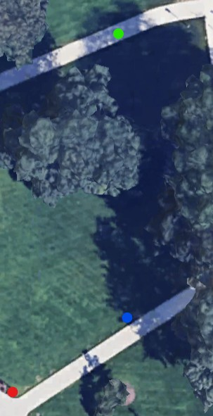

Stats
Par: 7
Distance: 169 ft
Hole Description
Starting from on the path from near the bench from the last hole, this hole has a mandatory left of the lamppost ahead, and the the target is the lamppost to the right down back by the fountain.
Map key: green dot starting box, red dot target, blue dot mandatory.